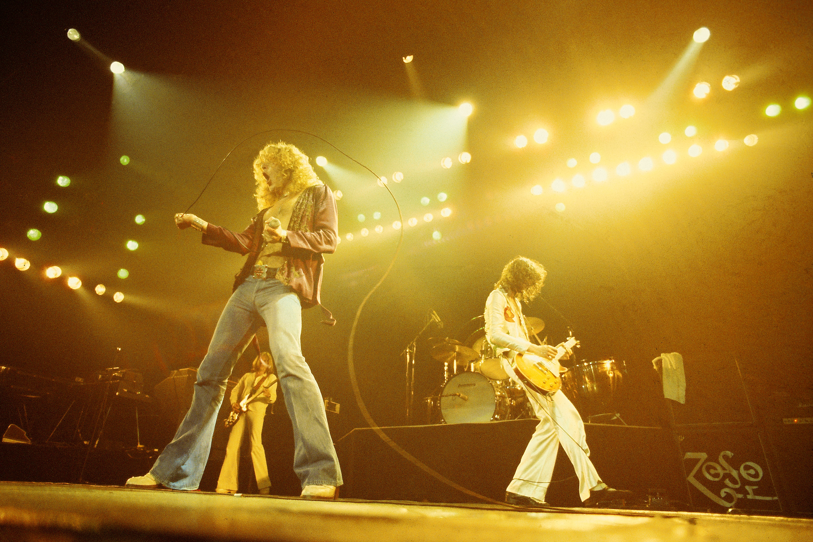
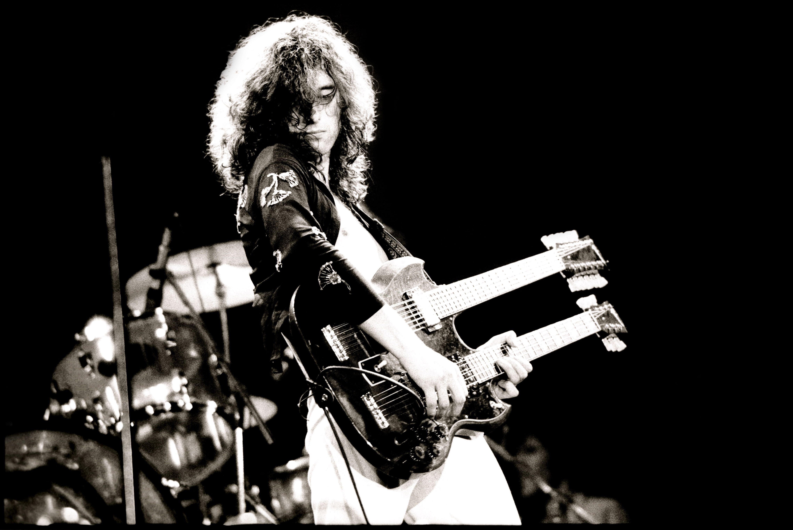
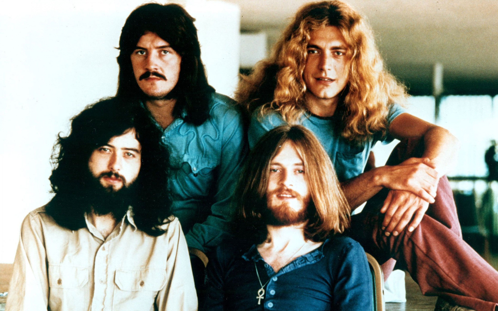
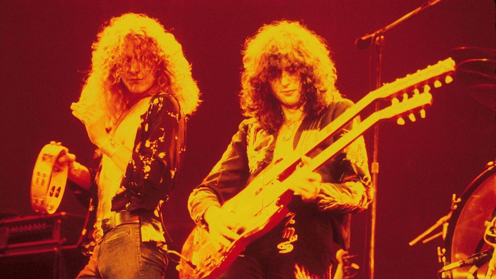
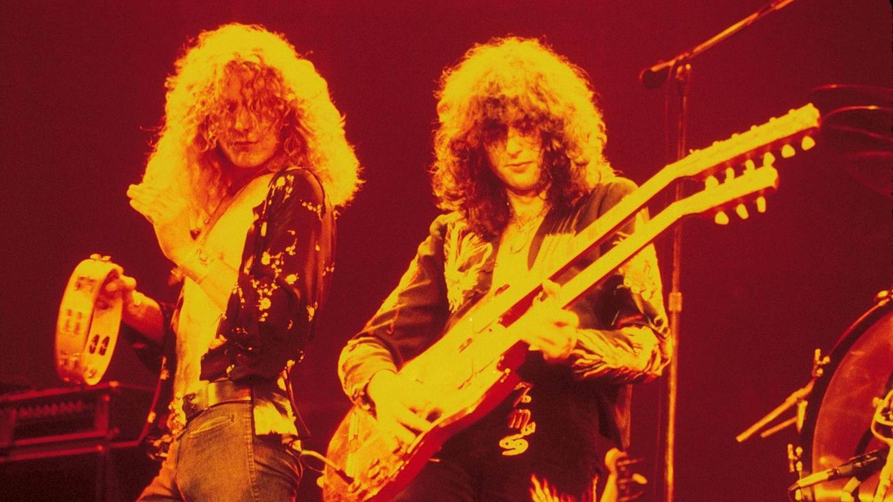

Desde sua formação em 1968, o Led Zeppelin se tornou uma força inigualável no mundo da música. Composto por Jimmy Page, Robert Plant, John Paul Jones e John Bonham, o quarteto britânico rapidamente conquistou os corações e mentes de fãs ao redor do globo com sua fusão única de rock, blues e elementos clássicos. O Led Zeppelin não apenas dominou as paradas de sucesso, mas também redefiniu o próprio conceito de rock 'n' roll. Seus álbuns lendários, como "Led Zeppelin I", "II", "III" e "IV", são testemunhos eternos de sua genialidade musical. De faixas explosivas como "Whole Lotta Love" a baladas épicas como "Stairway to Heaven", cada música é uma jornada emocionante através dos horizontes sonoros da criatividade.



 
